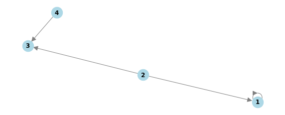
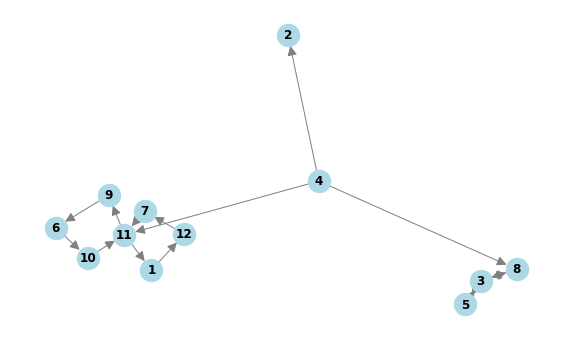

def solution(edges):
matrix = [[0 for _ in range(len(edges))] for _ in range(len(edges))]
for row, col in edges:
matrix[row - 1][col - 1] = 1
# 나가는 선
row_sums = []
for i in range(len(matrix)):
if sum(matrix[i]) == 0:
row_sums.append(0)
elif sum(matrix[i]) != 0:
row_sums.append(sum(matrix[i]))
#들어오는 선
col_sums = [0] * len(matrix[0])
for row in matrix:
for j in range(len(row)):
col_sums[j] += row[j]
bar = 0
eight = 0
for i in range(len(matrix)):
if col_sums[i] != 0 or row_sums[i] != 0:
if row_sums[i] == 0 :
bar += 1
elif row_sums[i] > 1 and col_sums[i] == 0:
정점 = i + 1
elif row_sums[i] == 2 and col_sums[i] >= 2:
eight += 1
donut = row_sums[정점 - 1] - bar - eight
answer = [정점, donut, bar, eight]
return answer- 링크
https://school.programmers.co.kr/learn/courses/30/lessons/258711
- 문제
도넛 모양 그래프, 막대 모양 그래프, 8자 모양 그래프들이 있습니다. 이 그래프들은 1개 이상의 정점과, 정점들을 연결하는 단방향 간선으로 이루어져 있습니다.
크기가 n인 도넛 모양 그래프는 n개의 정점과 n개의 간선이 있습니다. 도넛 모양 그래프의 아무 한 정점에서 출발해 이용한 적 없는 간선을 계속 따라가면 나머지 n-1개의 정점들을 한 번씩 방문한 뒤 원래 출발했던 정점으로 돌아오게 됩니다. 도넛 모양 그래프의 형태는 다음과 같습니다.
크기가 n인 막대 모양 그래프는 n개의 정점과 n-1개의 간선이 있습니다. 막대 모양 그래프는 임의의 한 정점에서 출발해 간선을 계속 따라가면 나머지 n-1개의 정점을 한 번씩 방문하게 되는 정점이 단 하나 존재합니다. 막대 모양 그래프의 형태는 다음과 같습니다.
크기가 n인 8자 모양 그래프는 2n+1개의 정점과 2n+2개의 간선이 있습니다. 8자 모양 그래프는 크기가 동일한 2개의 도넛 모양 그래프에서 정점을 하나씩 골라 결합시킨 형태의 그래프입니다. 8자 모양 그래프의 형태는 다음과 같습니다.
도넛 모양 그래프, 막대 모양 그래프, 8자 모양 그래프가 여러 개 있습니다. 이 그래프들과 무관한 정점을 하나 생성한 뒤, 각 도넛 모양 그래프, 막대 모양 그래프, 8자 모양 그래프의 임의의 정점 하나로 향하는 간선들을 연결했습니다.
그 후 각 정점에 서로 다른 번호를 매겼습니다.
이때 당신은 그래프의 간선 정보가 주어지면 생성한 정점의 번호와 정점을 생성하기 전 도넛 모양 그래프의 수, 막대 모양 그래프의 수, 8자 모양 그래프의 수를 구해야 합니다.
그래프의 간선 정보를 담은 2차원 정수 배열 edges가 매개변수로 주어집니다. 이때, 생성한 정점의 번호, 도넛 모양 그래프의 수, 막대 모양 그래프의 수, 8자 모양 그래프의 수를 순서대로 1차원 정수 배열에 담아 return 하도록 solution 함수를 완성해 주세요.
제한사항
1 ≤ edges의 길이 ≤ 1,000,000
edges의 원소는 [a,b] 형태이며, a번 정점에서 b번 정점으로 향하는 간선이 있다는 것을 나타냅니다.
1 ≤ a, b ≤ 1,000,000
문제의 조건에 맞는 그래프가 주어집니다.
도넛 모양 그래프, 막대 모양 그래프, 8자 모양 그래프의 수의 합은 2이상입니다.
- 답
- 힌트를 얻음.
입출력 예 #1
2번 정점이 생성한 정점이고 도넛 모양 그래프 1개, 막대 모양 그래프 1개가 존재합니다. 따라서 [2, 1, 1, 0]을 return 해야 합니다.
solution([[2, 3], [4, 3], [1, 1], [2, 1]])
# [2, 1, 1, 0][2, 1, 1, 0]입출력 예 #2
4번 정점이 생성한 정점이고 막대 모양 그래프 1개, 8자 모양 그래프 2개가 존재합니다. 따라서 [4, 0, 1, 2]를 return 해야 합니다.
solution([[4, 11], [1, 12], [8, 3], [12, 7], [4, 2], [7, 11], [4, 8], [9, 6], [10, 11], [6, 10], [3, 5], [11, 1], [5, 3], [11, 9], [3, 8]])
# [4, 0, 1, 2][4, 0, 1, 2]코드상의 에러는 없으나 시간초과로 통과되지 못했다.
- 한 줄씩
- 1번 예제
edges = [[2, 3], [4, 3], [1, 1], [2, 1]]import networkx as nx
import matplotlib.pyplot as plt
G = nx.DiGraph()
G.add_edges_from(edges)
pos = nx.spring_layout(G)
fig, ax = plt.subplots(figsize=(10, 4)) # 명시적으로 Figure와 Axes 생성
nx.draw(
G, pos, ax=ax, with_labels=True, node_size=500, node_color='lightblue',
font_size=12, font_weight='bold', edge_color='gray', arrowsize=20
)
plt.show()
matrix = [[0 for _ in range(len(edges))] for _ in range(len(edges))]
for row, col in edges:
matrix[row - 1][col - 1] = 1 # 행과 열은 1부터 시작하므로 -1 처리행렬을 만들어줬다.
matrix[[1, 0, 0, 0], [1, 0, 1, 0], [0, 0, 0, 0], [0, 0, 1, 0]]나가는 선
row_sums = []
for i in range(len(matrix)):
if sum(matrix[i]) == 0:
row_sums.append(0)
elif sum(matrix[i]) != 0:
row_sums.append(sum(matrix[i]))
row_sums[1, 2, 0, 1]들어오는 선
col_sums = [0] * len(matrix[0])
for row in matrix:
for j in range(len(row)):
col_sums[j] += row[j]
col_sums[2, 0, 2, 0]bar = 0
eight = 0
for i in range(len(matrix)):
if col_sums[i] != 0 or row_sums[i] != 0:
if row_sums[i] == 0 :
bar += 1
elif row_sums[i] > 1 and col_sums[i] == 0:
정점 = i + 1
elif row_sums[i] == 2 and col_sums[i] >= 2:
eight += 1
donut = row_sums[정점 - 1] - bar - eight
정점, donut, bar, eight(2, 1, 1, 0)- 1번 노드
- 나가는 간선 = 1
- 들어오는 간선 = 2
- 특징 나가는 간선이 1
- 2번 노드(정점)
- 나가는 간선 = 2
- 들어오는 간선 = 0
- 특징 나가는 간선이 2 이상, 들어오는 간선이 0
- 3번 노드
- 나가는 간선 = 0
- 들어오는 간선 = 2
- 4번 노드
- 나가는 간선 = 1
- 들어오는 간선 = 0
- 나가는 간선만 존재
- 정점 2
- 도넛모양 1
- 막대 모양 1
- 8자 모양 0
- 2번 예제
edges = [[4, 11], [1, 12], [8, 3], [12, 7], [4, 2], [7, 11], [4, 8], [9, 6], [10, 11], [6, 10], [3, 5], [11, 1], [5, 3], [11, 9], [3, 8]]import networkx as nx
import matplotlib.pyplot as plt
G = nx.DiGraph()
G.add_edges_from(edges)
pos = nx.spring_layout(G)
fig, ax = plt.subplots(figsize=(10, 6)) # 명시적으로 Figure와 Axes 생성
nx.draw(
G, pos, ax=ax, with_labels=True, node_size=500, node_color='lightblue',
font_size=12, font_weight='bold', edge_color='gray', arrowsize=20
)
plt.show()
4번 정점이 생성한 정점이고 막대 모양 그래프 1개, 8자 모양 그래프 2개가 존재합니다. 따라서 [4, 0, 1, 2]를 return 해야 합니다.
matrix = [[0 for _ in range(len(edges))] for _ in range(len(edges))]
for row, col in edges:
matrix[row - 1][col - 1] = 1 # 행과 열은 1부터 시작하므로 -1 처리나가는 선
row_sums = []
for i in range(len(matrix)):
if sum(matrix[i]) == 0:
row_sums.append(0)
elif sum(matrix[i]) != 0:
row_sums.append(sum(matrix[i]))
row_sums[1, 0, 2, 3, 1, 1, 1, 1, 1, 1, 2, 1, 0, 0, 0]들어오는 선
col_sums = [0] * len(matrix[0])
for row in matrix:
for j in range(len(row)):
col_sums[j] += row[j]
col_sums[1, 1, 2, 0, 1, 1, 1, 2, 1, 1, 3, 1, 0, 0, 0]bar = 0
eight = 0
for i in range(len(matrix)):
if col_sums[i] != 0 or row_sums[i] != 0:
if row_sums[i] == 0 :
bar += 1
elif row_sums[i] > 1 and col_sums[i] == 0:
정점 = i + 1
elif row_sums[i] == 2 and col_sums[i] >= 2:
eight += 1
donut = row_sums[정점 - 1] - bar - eight
정점, donut, bar, eight(4, 0, 1, 2)1 나가는 간선 = 1, 들어오는 간선 = 2,
2 나가는 간선 = 1, 들어오는 간선 = 2,
3 나가는 간선 = 1, 들어오는 간선 = 2,
4 나가는 간선 = 1, 들어오는 간선 = 2,
정점 4
도넛모양 0
막대 모양 1
8자 모양 2- ChatGPT 가 정리한 효율적인 답
def solution(edges):
# Determine the size of the matrix
n = max(max(row, col) for row, col in edges)
# Initialize adjacency matrix and in/out degree lists
row_sums = [0] * n
col_sums = [0] * n
# Populate adjacency matrix and calculate row/column sums
for row, col in edges:
row_sums[row - 1] += 1
col_sums[col - 1] += 1
# Initialize variables
bar, eight, vertex = 0, 0, -1
# Analyze the graph
for i in range(n):
if row_sums[i] == 0 and col_sums[i] > 0:
bar += 1
elif row_sums[i] > 1 and col_sums[i] == 0:
vertex = i + 1
elif row_sums[i] == 2 and col_sums[i] >= 2:
eight += 1
# Calculate donut
donut = row_sums[vertex - 1] - bar - eight if vertex != -1 else 0
return [vertex, donut, bar, eight]